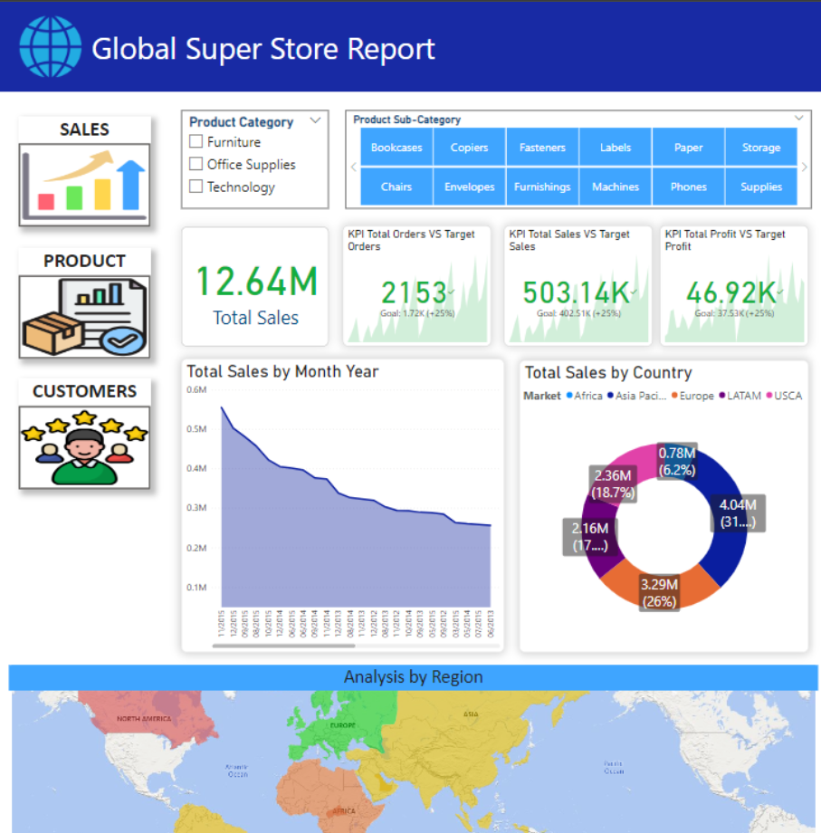
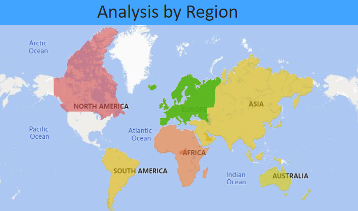
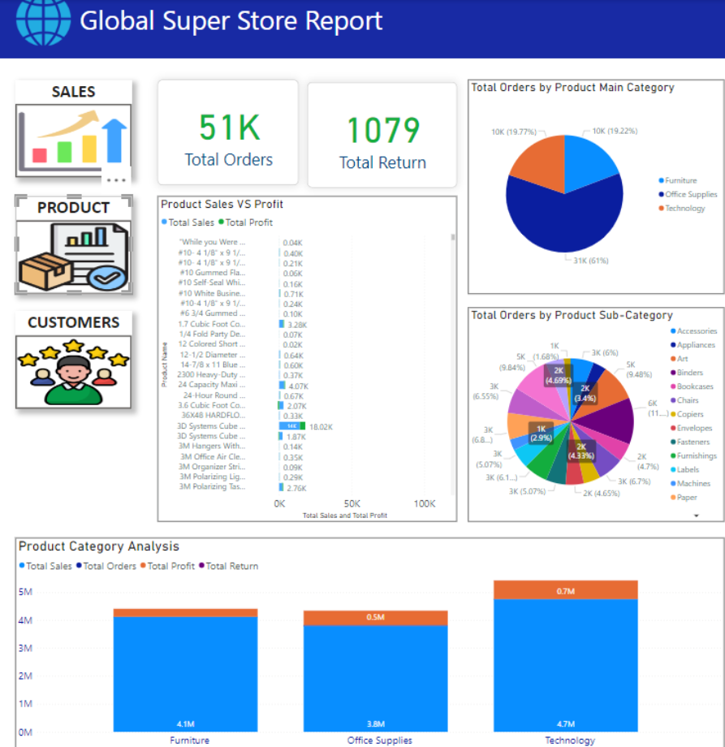
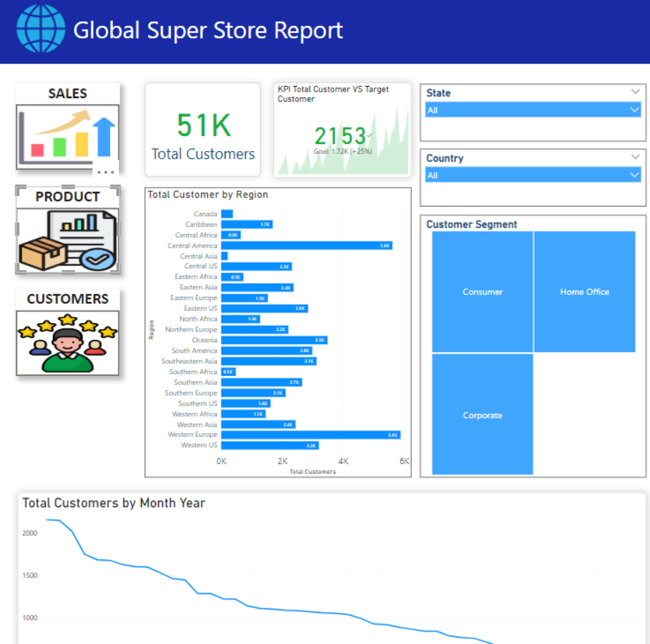

Global Superstore
The Global Superstore Powerbi report showcase the sales performance, product analysis and customer segmentation across the continent. The Sales Performance report shows the total sales of all or filtered product item, The total sales and profit KPI, The total sales by month and year, total sales by country and a Map analysis where you can know which region is getting more sales or not.
 Product Analysis showcase total orders and return, total orders by main product and sub product, sales vs profit per product, and the product category analysis showing total sales,orders, profit, and return by main product.
The customer segmentation report shows the total customers, total customer per region, customer KPI, and a line chart showing the total customer by month and year. Data set is from a excel file.